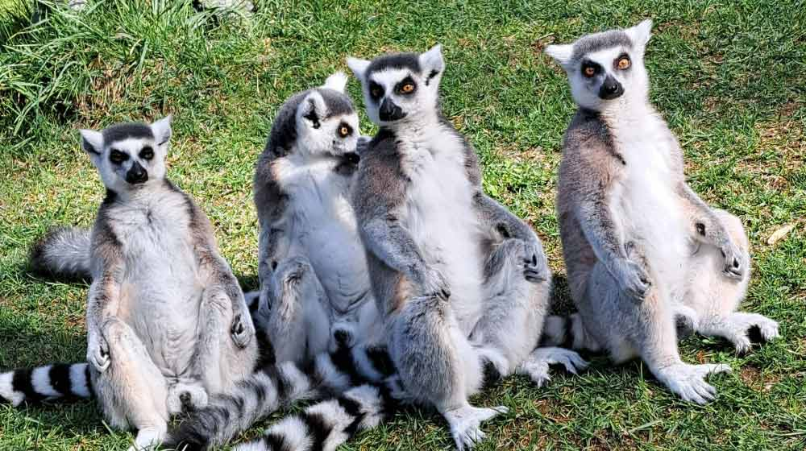
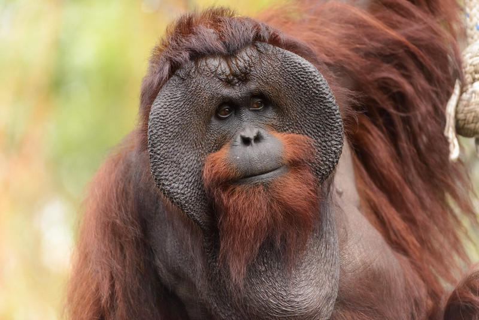
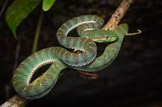

Welcome to the Best Brains Zoo!

Ring-tailed lemurs live in social groups ranging in size from three to 25 individuals.
The groups include multiple males and females, and females remain in their birth group for life.
These lemurs travel up to 6 kilometers (3.5 miles) per day in search of food and defend their home range
from neighboring groups.

Orangutans spend most of their lives in trees, using their long arms and strong hands to swing
through the forest canopy. They are highly intelligent and known for their use of tools.
Orangutans live mostly solitary lives, with males maintaining large territories that overlap with several females.

Green snakes are known for their bright green scales that help them blend into vegetation.
They are gentle and primarily insectivorous, feeding on small invertebrates.
They are active during the day and are excellent climbers, often seen in shrubs and low trees
searching for prey.